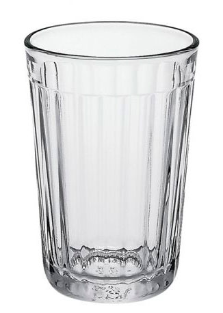
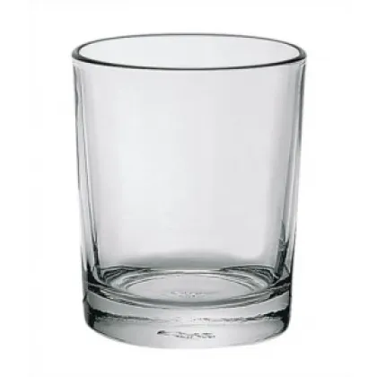
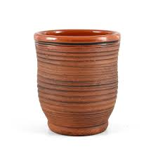
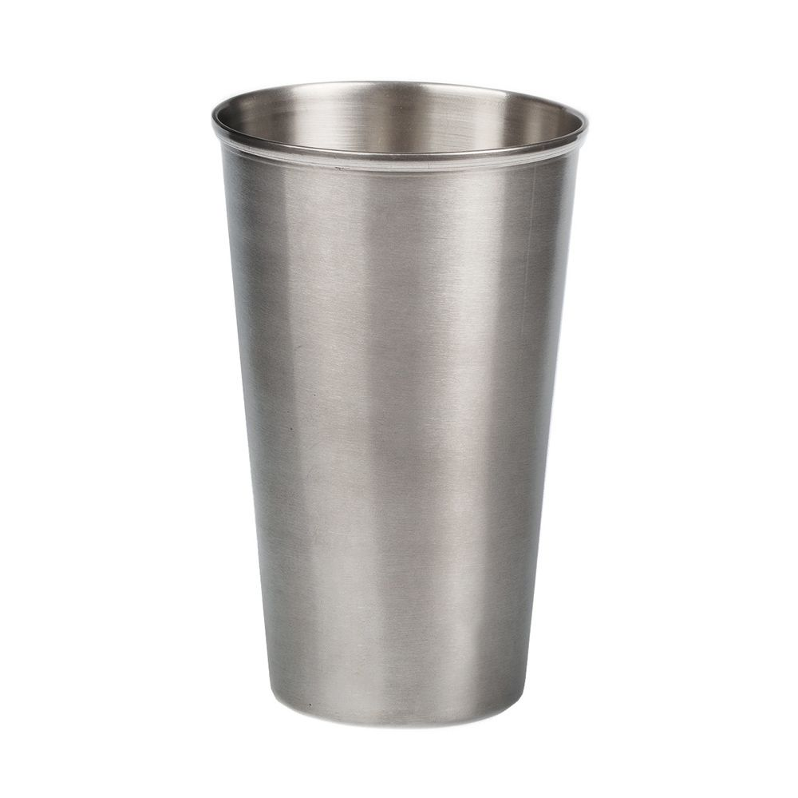
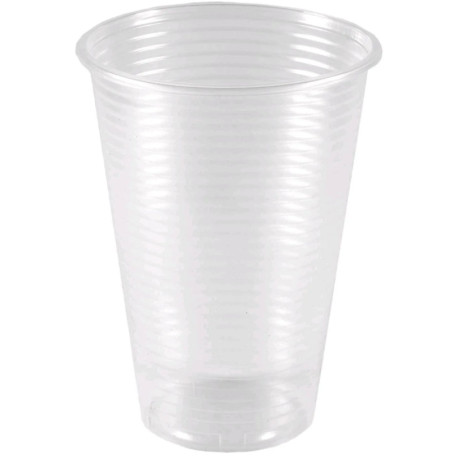
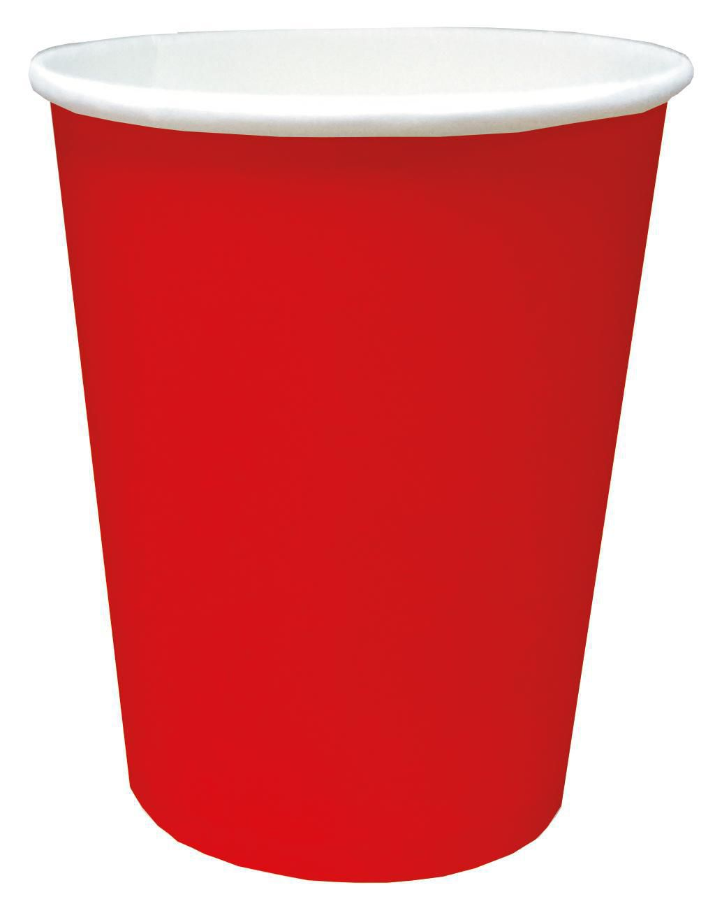

01
Гранёные (стеклянные)
Классический стакан из толстого прессованного стекла с ребристыми гранями. Грани повышают прочность при ударах, не дают стакану катиться по столу и снижают нагрев стенок.

02
Гладкие стеклянные
Тонкостенные или с утолщённым дном (хайбол, рокс). Используются для воды, соков и коктейлей — стекло химически нейтрально и совсем не влияет на вкус напитка.

03
Керамические и глиняные
Многоразовые стаканы с толстыми стенками и защитной глазурью. Долго сохраняют температуру напитка и часто используются в кофейнях для авторской подачи.

04
Металлические (стальные)
Изготавливаются из пищевой нержавеющей стали (одинарной или с вакуумными стенками). Практически не бьются, незаменимы в походах и в качестве термостаканов.

05
Пластиковые (PP / PET)
Лёгкие прозрачные или цветные стаканы из полипропилена. Дешевле бумажных, но плохо переносят кипяток и создают наибольшую нагрузку на окружающую среду.

06
Бумажные (картонные)
Герой нашего 3D-исследования: лёгкий гигиеничный стакан из целлюлозы с тонким барьерным слоем внутри, ставший стандартом для напитков навынос.